Overview
ReLeaf puts a plant protectant behind a green-light switch in Bacillus subtilis. Getting from a lamp to a secreted protein takes four things to happen in order, and the collection is organised as those four things plus a fifth that lets us test the cargo on its own.
The PCB production module makes the chromophore. Bacillus does not make phycocyanobilin on its own, so the ho1 and pcyA genes are supplied as a fused operon that turns the cell's own heme into it. The light sensing module holds the photoreceptor CcaS-m3, which only works once that chromophore is present. Green light makes it autophosphorylate. The transduction module holds CcaR, the response regulator that takes the phosphoryl group and turns it into transcription. The green-light responsive expression module is where that transcription lands: PcpcG2-veg drives a secretion peptide fused to a protectant. The secretion reporter module is the same cargo behind a constitutive promoter in a shuttle vector, so a negative protectant result has one fewer explanation to rule out.
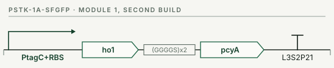
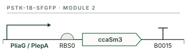
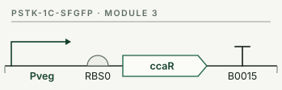
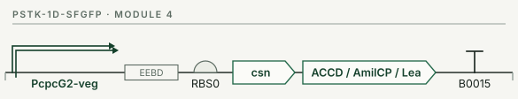
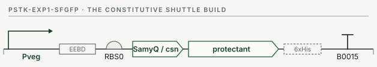
Four of those five modules were assembled into one plasmid at Level 2 on 1 September. What that assembly has behind it, and what it does not, is set out in the build record.
Status vocabulary
Every part in every table below carries one of five words. The words are the build spreadsheet's own states, not a scale we invented for the wiki: the Level 0 sheet records plasmid, glycerol stock, PCR product, TA cloning, enzyme digestion and sequencing as separate columns, the Level 1 sheet records an assembly status and a colony PCR length, and the sequencing file records a colony number and a date. A part gets the highest word it has earned, and the small tag after the word says at which assembly level it earned it.
-
Designed
A sequence exists and in most cases a synthesis plasmid exists, and no bench step after that is recorded. In the Level 0 sheet these rows read
not started
across every column. -
Cloned
The part is in an entry plasmid. PCR, gel, clean-up and TA cloning are recorded, and either the digest or the sequencing read is still missing.
-
Assembled
The transcription unit went into its destination vector and gave colonies. The Level 1 sheet writes this as
Assembly
, meaning under way and not yet confirmed. -
Colony-PCR checked
A colony PCR or a restriction digest returned the expected band. The construct is the right size and the junctions are where they should be. Nobody has read it.
-
Sequence-confirmed
A named colony and a sequencing date, both recorded in
sequencing positive clone.docx. This is the only word on the page that means somebody read the DNA back. -
Unsuccessful
The build record marks it failed. Three Level 1 assemblies carry this word, and all three are disputed by later gels; they are named under contested assemblies.
There is a sixth rung the collection does not reach in a way we can attribute. B. subtilis 168 takes the shuttle vector between 2.0 and 2.3 kV, and the transformation counts are on the Engineering page, but the archive nowhere records which cargo-bearing plasmid was in which transformant. So no individual part on this page is marked as being in B. subtilis, and the one protein-level signal we have, a single band at roughly 41 kDa on the 24 August blot, cannot be assigned to a named part either.
PCB production module
This module supplies the chromophore the light sensor needs. The ho1 and pcyA genes are carried as a single fused operon: heme oxygenase-1 opens the cell's endogenous heme ring, and phycocyanobilin:ferredoxin oxidoreductase reduces the product to phycocyanobilin. Without that molecule the CcaS photoreceptor is apoprotein and green light does nothing at all, which is why this module sits first in the chain even though it is not the part that senses anything.
| Part | Type | Status | Function |
|---|---|---|---|
| PtagC+RBS no number yet |
Promoter and RBS Composite |
Sequence-confirmed L1 | A promoter and a ribosome binding site delivered as one kit part, so transcription and translation of the gene behind it are set together. Kit entry STK035. |
| Ho1:pcyA BBa_K1232004 |
Chromophore biosynthesis operon Basic |
Sequence-confirmed L1 | Heme oxygenase-1 fused to phycocyanobilin:ferredoxin oxidoreductase through a (GGGGS)×2 linker, the two enzymes that make phycocyanobilin from heme. |
| L3S2P21 no number yet |
Terminator Basic |
Sequence-confirmed L1 | A strong synthetic Rho-independent terminator from the Chen synthetic terminator library [3], chosen here because it is recombination resistant. Kit entry STK077. |
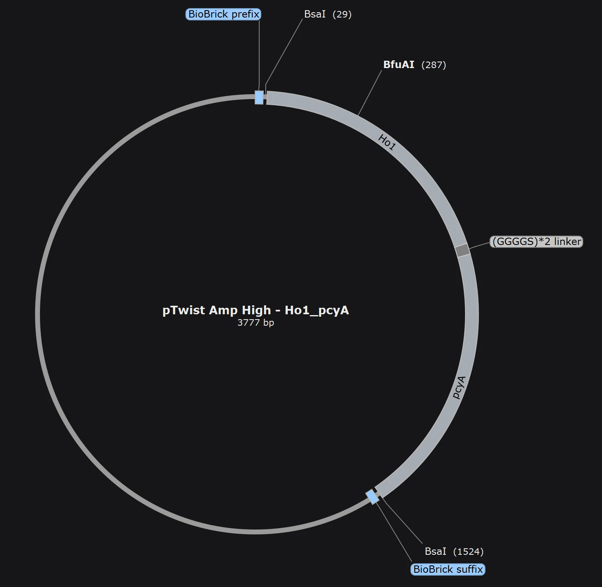
The Level 0 entry clone is pGEM-Teasy-Ho1-pcyA, clone #F1, complete through sequencing. The Level 1 unit is assembly A, colonies A1, A2 and A3, colony PCR at 1,833 bp on 30 July and sequenced on 31 July. This module was built twice; the first version sat behind Pveg and RBS0, sequenced clean and gave no expression signal, and the rebuild on PtagC and L3S2P21 is the one in the table. That history is on the Engineering page.
Light sensing module
CcaS-m3 is a miniaturised variant of the cyanobacterial CcaS histidine kinase. With phycocyanobilin bound, green light drives it to autophosphorylate and to pass the phosphoryl group to CcaR. We built it behind two constitutive promoters of different strength, PliaG and PlepA, because the useful dynamic range of a two-component system depends on how much sensor is sitting in the cell, and we had no way to predict which level would work in our hands.
| Part | Type | Status | Function |
|---|---|---|---|
| PlepA BBa_K823002 |
Constitutive promoter Basic |
Sequence-confirmed L1 | A constitutive B. subtilis promoter from the lepA region. The kit files it as low expression. Kit entry STK029, from BioBrick Box 2.0. |
| PliaG BBa_K823000 |
Constitutive promoter Basic |
Sequence-confirmed L1 | A weak constitutive B. subtilis promoter giving low-level baseline transcription. Kit entry STK030, from BioBrick Box 2.0. |
| RBS0 no number yet |
RBS Basic |
Sequence-confirmed L1 | A synthetic ribosome binding site described as very strong in B. subtilis [4]. Here it sets translation initiation of the CcaS-m3 photoreceptor. Kit entry STK204. |
| ccaS-m3 no number yet |
Photoreceptor Basic |
Sequence-confirmed L1 | The miniaturised optogenetic variant of CcaS from the cyanobacterial CcaS/CcaR system. Under green light it autophosphorylates and transfers the phosphoryl group to CcaR [1]. |
| B0015 no number yet |
Terminator Basic |
Sequence-confirmed L1 | A double terminator, very strong in B. subtilis, that stops read-through out of this module into the next one. Kit entry STK070. |
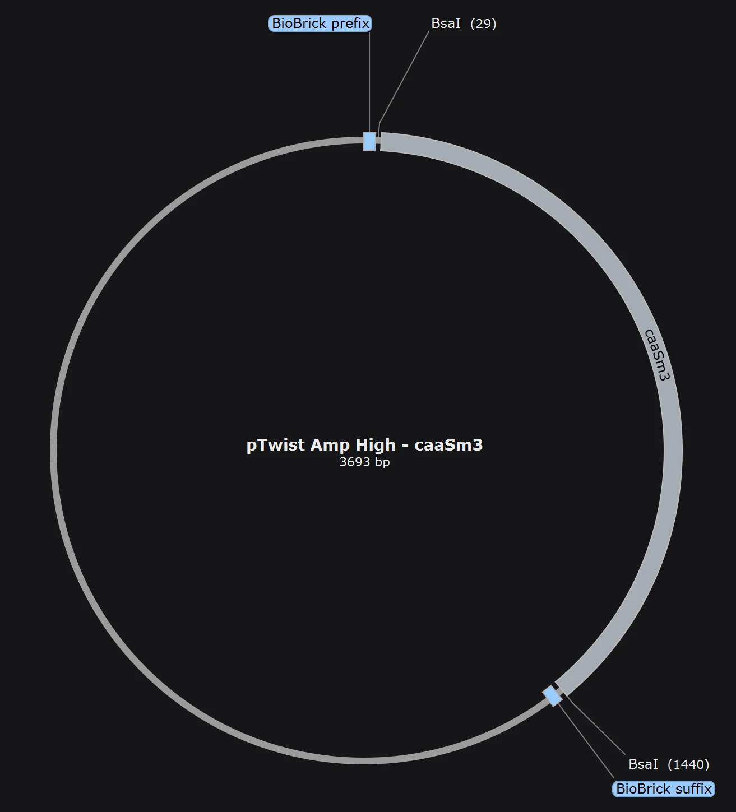
caaSm3; see P12.
Level 0 for ccaS-m3 is complete through sequencing. Both Level 1 units were confirmed: assembly B on PliaG, colony B2, colony PCR 24 June and sequenced 3 July, and assembly C on PlepA, colonies C6 and C9, colony PCR 22 July and sequenced 24 July. Which of the two promoters gives a better switch is not known, because the comparison needs an induction measurement and there is not one.
Transduction module
CcaR is the response regulator half of the pair, an OmpR-class protein that accepts the phosphoryl group from activated CcaS-m3 and then activates transcription from PcpcG2. It is the piece that turns a phosphorylation event into a promoter firing, and it is deliberately on a constitutive promoter of its own so that the amount of regulator in the cell does not itself depend on the light.
| Part | Type | Status | Function |
|---|---|---|---|
| Pveg BBa_K143012 |
Constitutive promoter Basic |
Sequence-confirmed L1 | A constitutive promoter from B. subtilis that transcribes continuously with no inducer. See P1: the kit entry we actually used, STK028, is a different accession and a different sequence. |
| RBS0 no number yet |
RBS Basic |
Sequence-confirmed L1 | The same very strong synthetic ribosome binding site [4], here setting translation initiation of the CcaR response regulator. Kit entry STK204. |
| CcaR BBa_K592002 |
Response regulator Basic |
Sequence-confirmed L1 | An OmpR-class response regulator. It takes phosphate from activated CcaS and activates transcription from the light-responsive promoter PcpcG2 [1]. |
| B0015 no number yet |
Terminator Basic |
Sequence-confirmed L1 | A double terminator stopping read-through past the response regulator into the module after it. Kit entry STK070. |
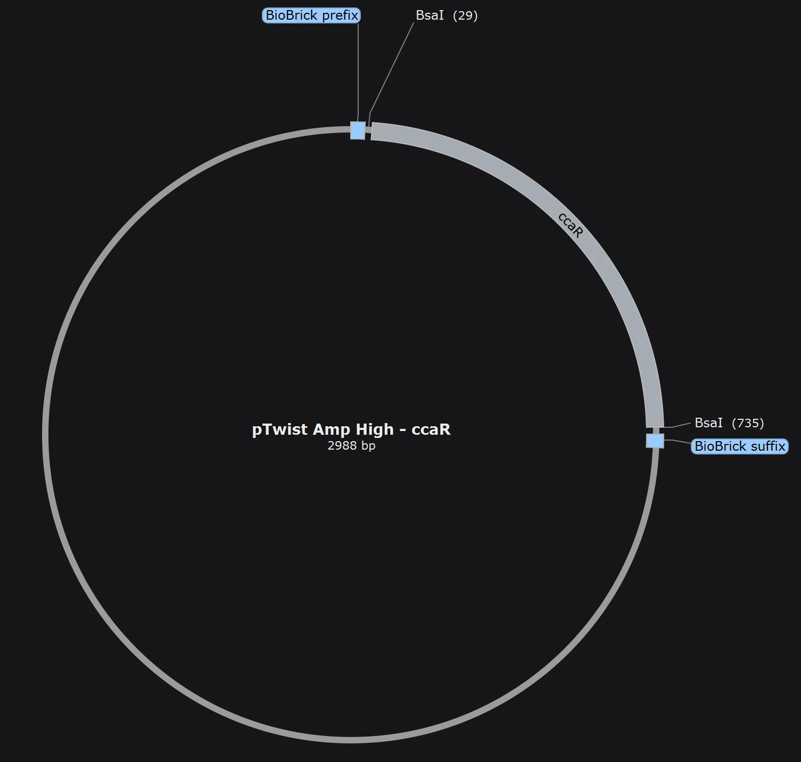
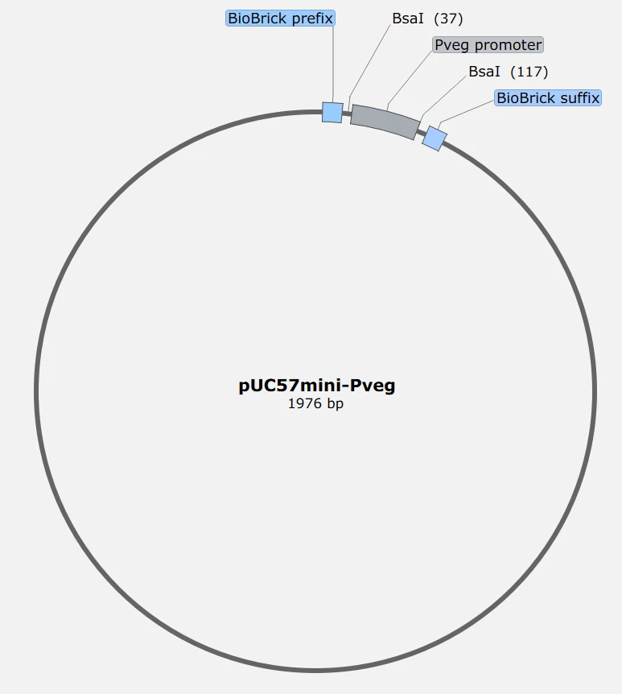
Level 0 for ccaR is complete through sequencing. The Level 1 unit is assembly D, 3,243 bp, colony PCR 26 June and sequenced 1 July. It was the first module in the collection to be finished.
Green-light responsive expression
This is the output stage. PcpcG2-veg is a chimera: the cyanobacterial CcaR-responsive promoter with B. subtilis promoter features grafted on so that the host's own polymerase will read it. Behind it sits EEBD-RBS0, and behind that a secretion peptide fused to whichever protectant is being tested. Several cargoes went through the slot, and they are the reason the module table is long: each promoter, RBS and terminator is shared, and only the cassette changes.
| Part | Type | Status | Function |
|---|---|---|---|
| PcpcG2-veg no number yet |
Light-responsive promoter Basic |
Sequence-confirmed L1 | A chimeric promoter built from the cyanobacterial CcaR-responsive element and B. subtilis promoter features, for optogenetic control of what sits behind it [1, 2]. |
| EEBD-RBS0 no number yet |
RBS Composite |
Sequence-confirmed L1 | RBS0 with an E. coli expression blocking device in front of it: a B0015 terminator between two recombination sites, which keeps the gene silent while the plasmid is being built in E. coli and recombines out in B. subtilis. Kit entry STK207. |
| Csn:ACCD no number yet |
Functional gene cassette Composite |
Sequence-confirmed L1 | ACC deaminase, which degrades 1-aminocyclopropane-1-carboxylate, the immediate precursor of ethylene, so that a stressed plant makes less of the hormone that tells it to stop growing. Fused to the Csn N-terminal signal peptide for export. |
| SamyQ:ACCD no number yet |
Functional gene cassette Composite |
Designed | The same enzyme behind the SamyQ signal peptide instead of Csn. The wild-type version of this cassette appears in no colony list and has no sequencing date; only the v2t1 mutant below was built. |
| SamyQ:ACCD v2t1 no number yet |
Functional gene cassette Composite |
Sequence-confirmed L1 | ACC deaminase carrying a point mutation intended to stabilise the fold under field conditions, behind the SamyQ signal peptide. Level 0 clone #QD2 on 20 August; Level 1 in both the constitutive and the light-gated context. |
| SamyQ:LEA v2t1 no number yet |
Functional gene cassette Composite |
Sequence-confirmed L1 | LEA14, a late embryogenesis abundant protein that holds cellular structures together under dehydration, carrying a stabilising point mutation and the SamyQ signal peptide. |
| SamyQ-BoPep4 no number yet |
Functional gene cassette Composite |
Designed | BoPep4, a C-terminally encoded plant elicitor peptide from broccoli, behind the SamyQ signal peptide. The wild type has a design file and no colony. |
| SamyQ-BoPep4 (9-23) no number yet |
Functional gene cassette Composite |
Designed | A truncated fragment of the peptide, fused to SamyQ. Cutting the peptide down is meant to lower the molecular weight enough to improve tissue entry. See P3: two of our own files disagree about where the truncation starts. |
| B0015 no number yet |
Terminator Basic |
Sequence-confirmed L1 | A double terminator closing the cassette, so transcription does not run past the protectant. Kit entry STK070. |
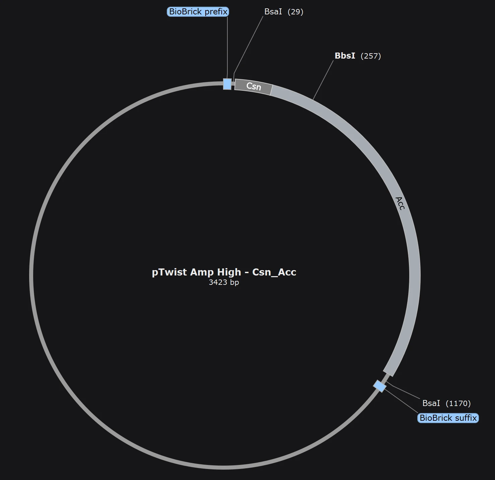
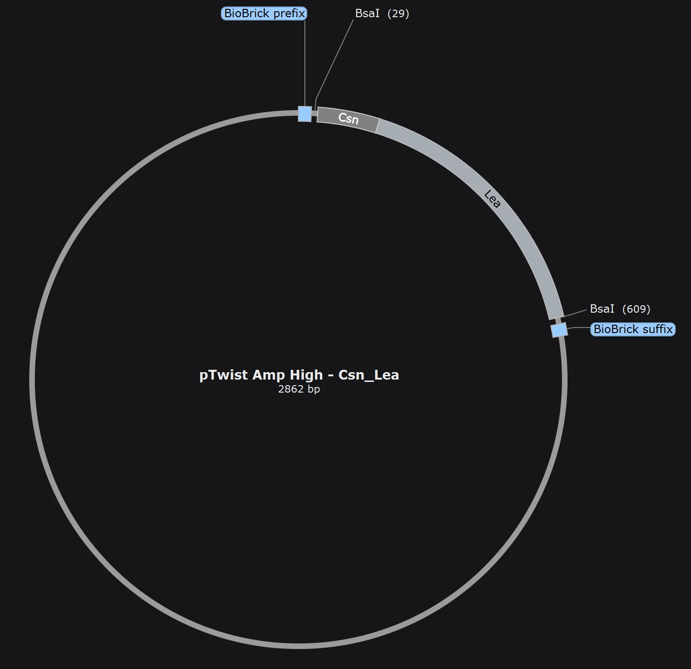
The light-gated ACC deaminase unit is assembly I, 3,757 bp, colony PCR 27 July and sequenced 28 July from colonies I3 and I6. The light-gated LEA unit is assembly G, and it is one of the three that failed. The light-gated mutant ACC deaminase unit is assembly Q, colonies Q2, Q3 and Q15, sequenced 3 September, which makes it the most recent confirmed construct in the collection.
Secretion reporter module
Same cargoes, constitutive promoter, shuttle vector. The point of this module is diagnostic. A construct that has to be induced by light before it makes anything gives a negative protectant result two possible causes, the switch or the cargo, and with no induction curve there is no way to tell them apart. Putting each cargo behind Pveg in pSTK-EXP-1-sfGFP, which replicates in both E. coli and B. subtilis, removes one of the two.
| Part | Type | Status | Function |
|---|---|---|---|
| Pveg BBa_K143012 |
Constitutive promoter Basic |
Sequence-confirmed L1 | The constitutive promoter that replaces the light gate in this module, so the cargo can be tested on its own. Accession disputed, see P1. |
| EEBD-RBS0 no number yet |
RBS Composite |
Sequence-confirmed L1 | The blocking device and ribosome binding site described above. It matters more here than in the light-gated module, because a constitutive promoter would otherwise express the cargo throughout the E. coli cloning. Kit entry STK207. |
| Csn:ACCD no number yet |
Functional gene cassette Composite |
Sequence-confirmed L1 | ACC deaminase behind the Csn signal peptide, the cargo carried furthest in the project. Assembly J, colony J9, sequenced 28 July. |
| SamyQ:ACCD no number yet |
Functional gene cassette Composite |
Designed | The wild-type enzyme behind the SamyQ signal peptide. Designed and not built. |
| SamyQ:ACCD v2t1 no number yet |
Functional gene cassette Composite |
Sequence-confirmed L1 | The stabilised deaminase behind SamyQ. Assembly P, colonies P2 and P7, sequenced 26 August. |
| Csn:Lea no number yet |
Functional gene cassette Composite |
Sequence-confirmed L1 | LEA behind the Csn signal peptide. Level 0 clone #S16 on 20 August, assembly R, colonies R2 and R5, sequenced 26 August. Spelling inconsistent across our sources, see P4. |
| SamyQ:LEA v2t1 no number yet |
Functional gene cassette Composite |
Sequence-confirmed L1 | The stabilised LEA behind SamyQ. Level 0 clone #QA1 on 20 August, assembly S, colonies S5 and S11, sequenced 3 September. |
| SamyQ-BoPep4 no number yet |
Functional gene cassette Composite |
Designed | The wild-type elicitor peptide behind SamyQ. It has a design file and appears in the sequencing record with no colony and no date. |
| SamyQ-BoPep4-v2t1 no number yet |
Functional gene cassette Composite |
Sequence-confirmed L0 | A codon-optimised version of the peptide. Level 0 colonies V4 and V19, sequenced 19 August. The Level 1 assembly, labelled N, has no colony and no sequencing date. |
| SamyQ-BoPep4-v2t2 no number yet |
Functional gene cassette Composite |
Sequence-confirmed L0 | A second codon-optimised version. Level 0 colony V7, sequenced 19 August. The Level 1 assembly, labelled O, has no colony and no sequencing date. |
| SamyQ-BoPep4 (9-23) no number yet |
Functional gene cassette Composite |
Designed | The truncated peptide behind SamyQ. Designed and not built. Truncation boundary disputed, see P3. |
| SamyQ-BoPep4 (S15A) no number yet |
Functional gene cassette Composite |
Designed | A single alanine substitution at position 15 of the peptide. Designed and not built. |
| SamyQ-BoPep4 (G17A) no number yet |
Functional gene cassette Composite |
Designed | A single alanine substitution at position 17. Designed and not built. |
| B0015 no number yet |
Terminator Basic |
Sequence-confirmed L1 | The double terminator closing every cassette in the module. Kit entry STK070. |
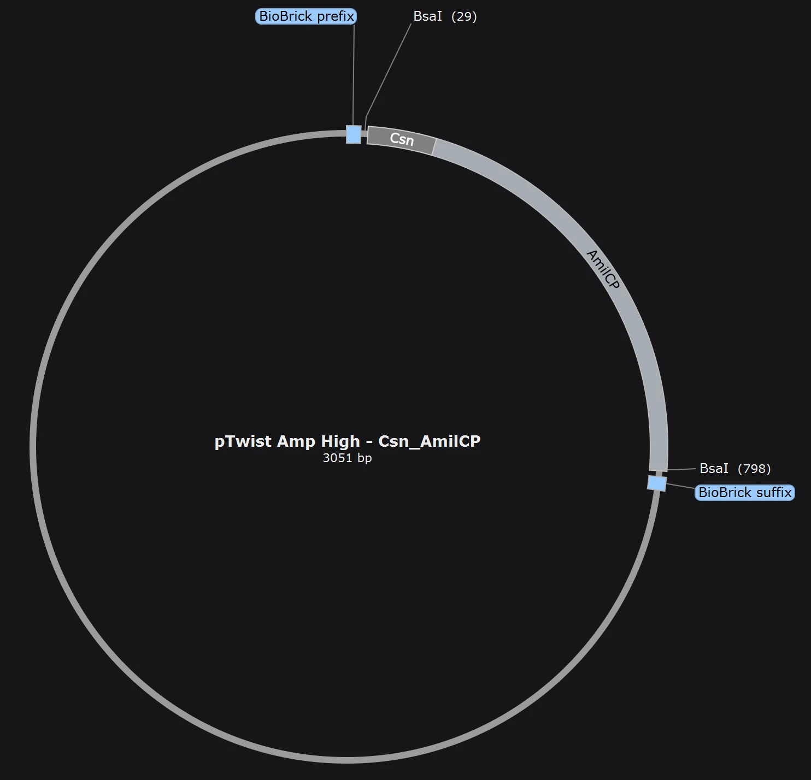
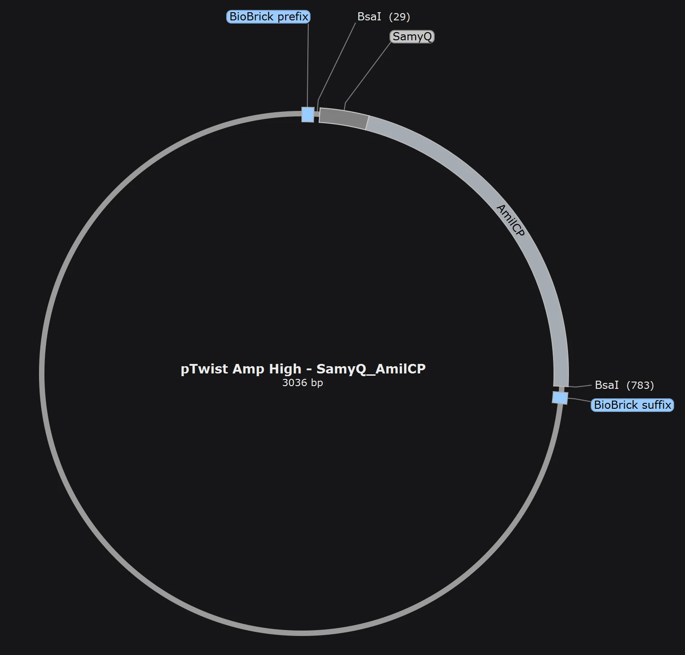
Build record
This is the part of the page that makes the status words mean something. It is assembled from four records kept separately during the summer: the Level 0 progression sheet, the Level 1 assembly sheet with its cloning and colony PCR lengths, the sequencing file with colony numbers and dates, and the monthly gel decks.
They disagree, and not only at the edges. The spreadsheet called PARTS PROGRESSION FINAL!!.xlsx is the most organised of the four and also the most out of date: its Level 2 sheet contains no Level 2 work at all (P15), and its Level 1 sheet still reads Not started
for three constructs that were sequenced in August and September (P6). It is treated here as one source among several and not as the record. Where a gel and a sheet disagree, the tables below follow the gel and say so in a box.
Level 0 progression
Level 0 is where a coding sequence or a regulatory element becomes a standard entry part. The six step columns below are, in full, plasmid, glycerol stock, PCR product, TA cloning, enzyme digestion and sequencing. Six of our parts went all the way through. The rest of the sheet is the alternate promoter and ribosome binding site panel, which arrived from the synthesis house on pUC57mini and never entered the workflow, because the kit already had promoters that did the same job.
| Part | Type | Plasmid | Stock | PCR | TA | Digest | Seq. | Status |
|---|---|---|---|---|---|---|---|---|
| pGEM-Teasy-Ho1-pcyA | CDS | ✓ | ✓ | ✓ | ✓ | ✓ | ✓ | Sequence-confirmed L0 |
| ccaSm3 | CDS | ✓ | ✓ | ✓ | ✓ | ✓ | ✓ | Sequence-confirmed L0 |
| ccaR | CDS | ✓ | ✓ | ✓ | ✓ | ✓ | ✓ | Sequence-confirmed L0 |
| Csn:AmilCP | CDS | ✓ | ✓ | ✓ | ✓ | ✓ | ✓ | Sequence-confirmed L0 |
| Csn:AccD | CDS | ✓ | ✓ | ✓ | ✓ | ✓ | ✓ | Sequence-confirmed L0 |
| Csn:Lea | CDS | ✓ | ✓ | ✓ | ✓ | ✓ | ✓ | Sequence-confirmed L0 |
| SamyQ-TAT-HA-AmilCP | CDS | – | – | ✓ | ✓ | – | – | Cloned L0 |
| PcpcG2-veg | Promoter | ✓ | ✓ | ✓ | ✓ | – | ✓ | Sequence-confirmed L0 |
| EEBD-MF001 | RBS | ✓ | ✓ | ✓ | – | – | – | Cloned L0 |
| PrpsD, Pveg, PserA, PREF, PymdA, P43 | Promoter | – | – | – | – | – | – | Designed |
| MF001, sRBS2, MF002 | RBS | – | – | – | – | – | – | Designed |
| L3S1P52:L3S2P56 | Terminator | – | – | – | – | – | – | Designed |
The nine designed-only parts exist as physical DNA. Their maps are below, and each one is a short insert between two BsaI sites on a small synthesis backbone, ready to go into Level 0 whenever somebody has a reason to.
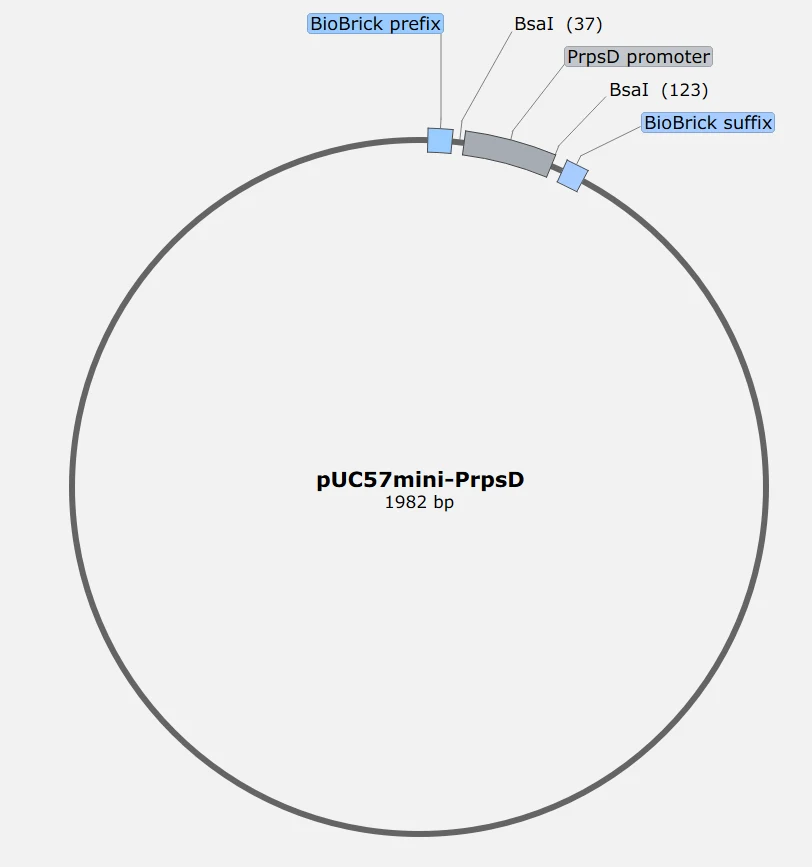
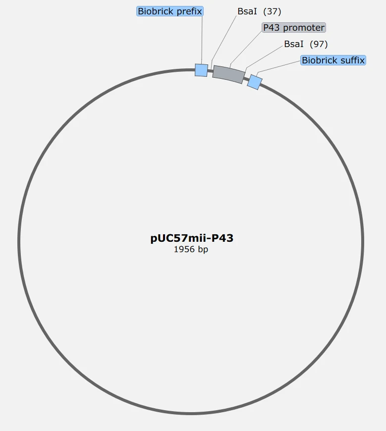
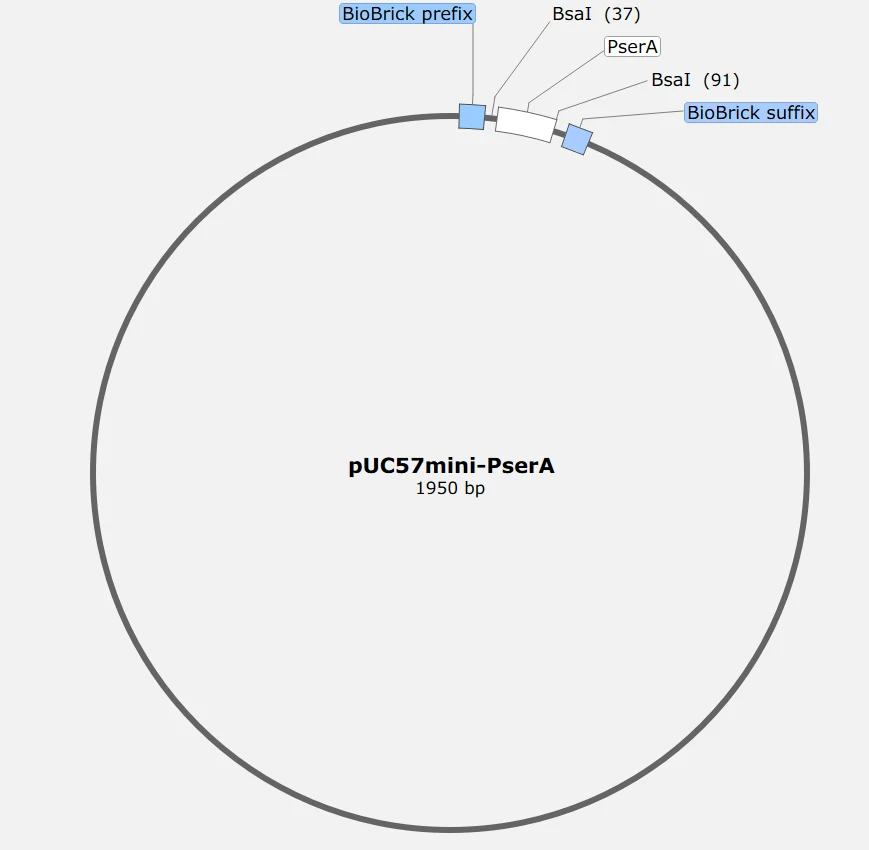
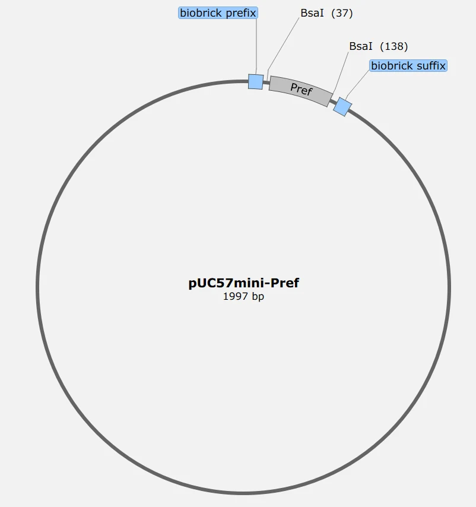
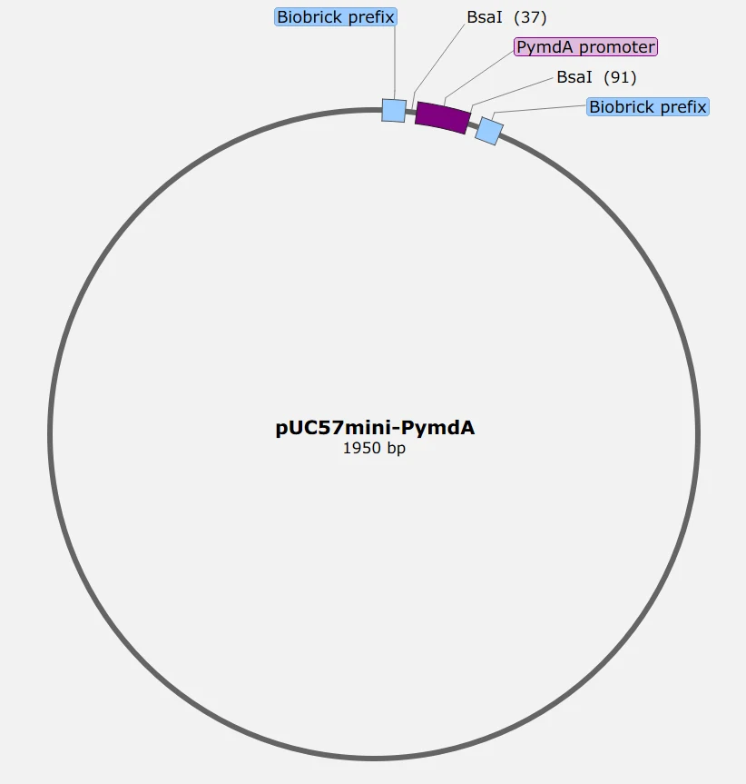
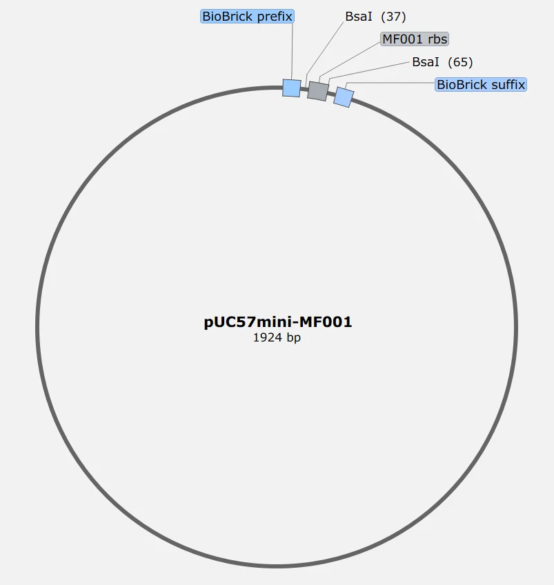
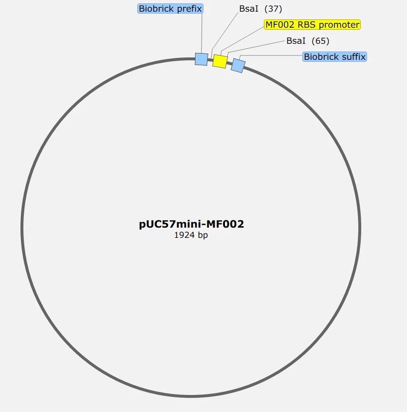
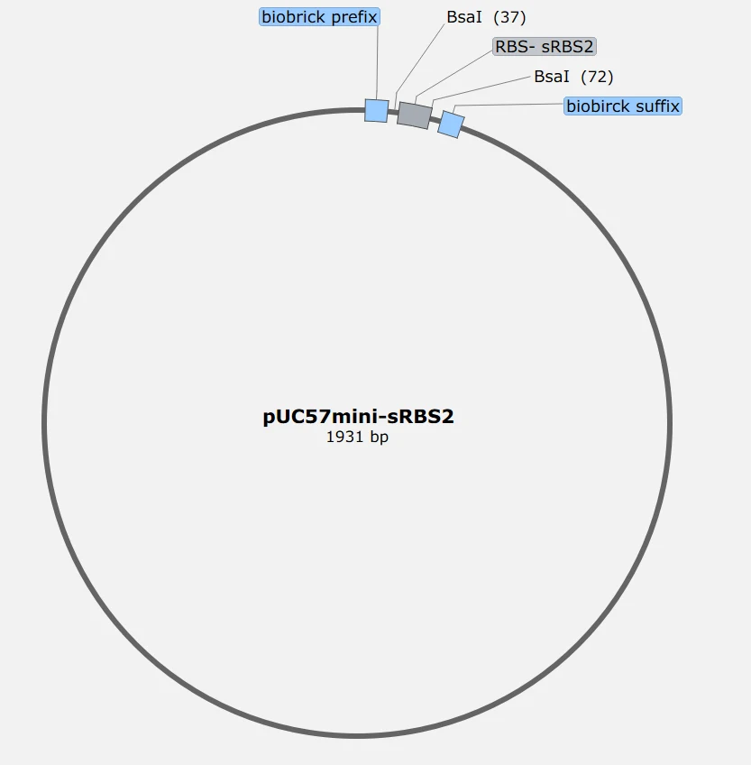
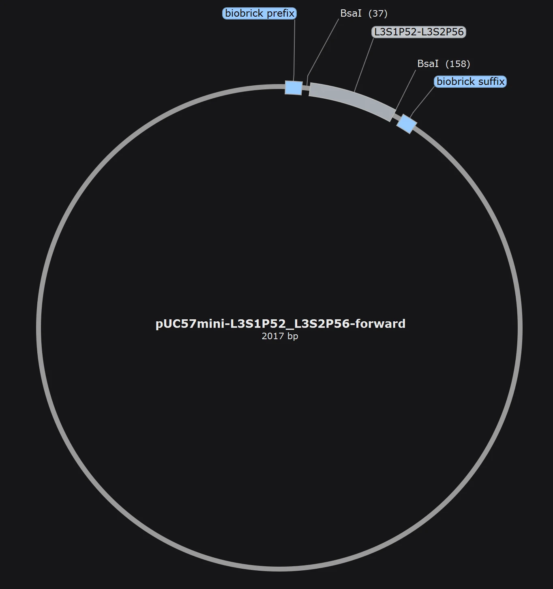
Level 1 assemblies
Twelve transcription units were attempted, labelled A to M in the sequencing record. Nine reached a sequence-confirmed colony. Every date below is 2026.
| Label | Architecture | Vector | Cloning bp | Colony PCR | Sequenced | Status |
|---|---|---|---|---|---|---|
| A | PtagC+RBS · Ho1:pcyA · L3S2P21 | pSTK-1A-sfGFP | 3,754 | 30 Jul, 1,833 bp | 31 Jul · A1, A2, A3 | Sequence-confirmed L1 |
| B | PliaG · RBS0 · CcaS-m3 · B0015 | pSTK-1B-sfGFP | 3,792 | 24 Jun | 3 Jul · B2 | Sequence-confirmed L1 |
| C | PlepA · RBS0 · CcaS-m3 · B0015 | pSTK-1B-sfGFP | 3,828 | 22 Jul | 24 Jul · C6, C9 | Sequence-confirmed L1 |
| D | Pveg · RBS0 · CcaR · B0015 | pSTK-1C-sfGFP | 3,243 | 26 Jun | 1 Jul · B2, B4 (see P7) | Sequence-confirmed L1 |
| E | PcpcG2-veg · EEBD-RBS0 · Csn:AmilCP · B0015 | pSTK-1D-sfGFP | not recorded | 24 Jun | 3 Jul · G3 | Sequence-confirmed L1 |
| F | Pveg · EEBD-RBS0 · Csn:AmilCP · B0015 | pSTK-1D-sfGFP | 7,395 | 26 Jun | 3 Jul · H10 | Sequence-confirmed L1 |
| G | PcpcG2-veg · EEBD-RBS0 · Csn:LEA · B0015 | pSTK-1D-sfGFP | 3,296 | G7 to G9 into liquid culture, 4 Aug | – | Unsuccessful · contested, see P14 |
| H | Pveg · EEBD-RBS0 · Csn:LEA · B0015 | pSTK-EXP-1-sfGFP | not recorded | – | – | Assembled L1 |
| I | PcpcG2-veg · EEBD-RBS0 · Csn:ACCD · B0015 | pSTK-1D-sfGFP | 3,757 | 27 Jul | 28 Jul · I3, I6 | Sequence-confirmed L1 |
| J | Pveg · EEBD-RBS0 · Csn:ACCD · B0015 | pSTK-EXP-1-sfGFP | not recorded | 27 Jul, digest | 28 Jul · J9 | Sequence-confirmed L1 |
| K | Pveg · EEBD-RBS0 · SamyQ-TAT-HA-AmilCP · B0015 | pSTK-EXP-1-sfGFP | 7,464 | 9 Jul | 14 Jul · D10, D14 | Sequence-confirmed L1 |
| L | P3P · EEBD-RBS0 · spacer · GanA-Gala · 6×His · L3S2P21 | pSTK-EXP-1-sfGFP | not recorded | L1 and L3 at 1.3 kb, 18 Aug 24 clones at 3,535 bp, 5 Sep | – | Unsuccessful · contested, see P14 |
| M | PcpcG2-veg · EEBD-RBS0 · GanA-Gala · L3S2P21 | not recorded | not recorded | M9 at 2,837 bp, 9 Sep | – | Unsuccessful · contested, see P14 |
| N | Pveg · SamyQ-BoPep4-v2t1 · B0015 | pSTK-EXP-1 | not recorded | N9 to N19 at 559 bp, 9 Sep | – | Colony-PCR checked L1 |
| O | Pveg · SamyQ-BoPep4-v2t2 · B0015 | pSTK-EXP-1 | not recorded | O9 to O12 at 559 bp, 9 Sep | – | Colony-PCR checked L1 |
| P | Pveg · EEBD-RBS0 · SamyQ:ACCD v2t1 · B0015 | pSTK-EXP-1 | not recorded | P1 to P9 at 1,286 bp, 17 Sep | 26 Aug · P2, P7 | Sequence-confirmed L1 |
| Q | PcpcG2-veg · SamyQ:ACCD v2t1 · B0015 | pSTK-1D | not recorded | – | 3 Sep · Q2, Q3, Q15 | Sequence-confirmed L1 |
| R | Pveg · EEBD-RBS0 · Csn:LEA · B0015 | pSTK-1D / EXP-1 | not recorded | – | 26 Aug · R2, R5 | Sequence-confirmed L1 |
| S | Pveg · EEBD-RBS0 · SamyQ:LEA v2t1 · B0015 | pSTK-1D / EXP-1 | not recorded | – | 3 Sep · S5, S11 | Sequence-confirmed L1 |
Labels A to M come from the circuit sheet and N to S from the protectant sheet, which is why the letters R and S appear twice in the archive with different meanings, once as a Level 0 label and once as a Level 1 one. The letters used above are the Level 1 ones.
Level 2 junction check
Three consecutive Golden Gate rounds returned nothing with no design change between them. The insert-to-vector ratio was then swept at 1:5 and 1:7, and on 1 September one clone from each ratio was checked across all three internal junctions: junction A at 375 bp, junction B at 632 bp and junction C at 661 bp. Those two clones are X5 and X7, named after the ratios that produced them. Three junctions is what separates a complete circuit from a plasmid that happens to contain one module.
On 19 September the check was repeated and widened. Three independent ACDI clones, X1, X3 and X9, were run at all three junctions in a single nine-lane gel, and every lane carries a band. That is the strongest cloning evidence the project holds.
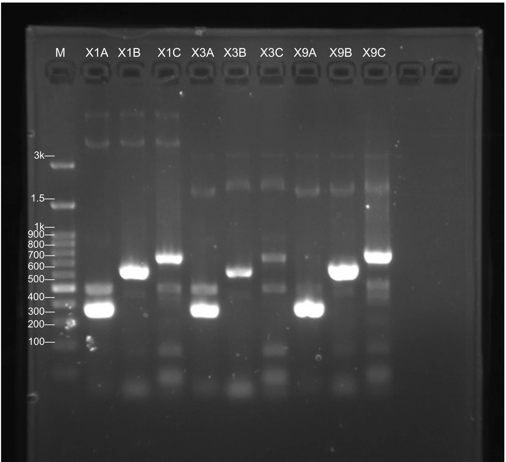
A second Level 2 device also exists and has never appeared on this wiki. ABDI is the same four modules with the PliaG version of the CcaS unit in place of the PlepA one, so it is A, B, D and I where the other is A, C, D and I. Its clone V7 was called positive on 1 September, and it was screened across August and again on 17 September. It has never had all three junctions checked in one gel, which is the difference between it and ACDI.
| Label | Combination | Colony | Colony PCR | Sequenced | Status |
|---|---|---|---|---|---|
| X | ACDI · A, C, D, I | X5, X7 X1, X3, X9 | 1 Sep, three junctions on two clones 19 Sep, three junctions on three clones 8 Sep, X5 and X7 at 1,424 bp 18 Sep, ten lanes at 632 bp | – | Colony-PCR checked L2 |
| V | ABDI · A, B, D, I | V7 | 8 Aug, three junctions at 2,626 / 1,195 / 1,549 bp 19 Aug, V1 to V8 at 1,424 bp 1 Sep, V7 called positive 17 Sep, V1 to V7 | – | Colony-PCR checked L2 |
Contested assemblies
Three Level 1 assemblies are marked unsuccessful in the sequencing record, and they are named here because a parts page that lists only the ones that worked is not a record of anything. All three have since turned up on gels as positives, which is P14 and is unresolved.
- G, PcpcG2-veg · EEBD-RBS0 · Csn:LEA · B0015, 3,296 bp. The light-gated LEA unit. The constitutive equivalent, R, was confirmed on 26 August, so the cassette itself assembles. Clones G7 to G9 went into liquid culture on 4 August and G4 and G6 followed on 10 August, which is not what a failed assembly usually gets.
- L, the galactosidase arm in the shuttle vector. All twelve screened colonies failed on 30 July. Then L1 and L3 ran at 1.3 kb on 18 August, and twenty-four L clones ran at 3,535 bp on 5 September.
- M, the light-gated galactosidase unit. Same cargo, same recorded outcome, and M9 was screened at 2,837 bp on 9 September alongside N and O.
Protectant series
Most of the collection is borrowed. This section is the part that is not. Three protectant proteins were taken as starting points, ACC deaminase, LEA14 and the broccoli elicitor peptide BoPep4, and each was put through some combination of codon optimisation, point mutation and truncation, then fused to a secretion peptide. The variant suffixes follow a v-and-t convention of the team's own: v is the sequence version and t is the trial within it.
Mutation series
The stated intent behind the point mutations is to stabilise the fold so the protein survives being sprayed onto a leaf. What the record holds is the cloning, not the stability.
| Design | L0 label | L0 colony | L0 seq. | L1 label | L1 colony | L1 seq. | Status |
|---|---|---|---|---|---|---|---|
| SamyQ-BoPep4 (WT) | – | – | – | – | – | – | Designed |
| SamyQ-BoPep4-v2t1 | V | V4, V19 | 19 Aug | N | N9 to N19, colony PCR 9 Sep | – | Sequence-confirmed L0 |
| SamyQ-BoPep4-v2t2 | V | V7 | 19 Aug | O | O9 to O12, colony PCR 9 Sep | – | Sequence-confirmed L0 |
| SamyQ-ACCD-v2t1 | QD | QD2 | 20 Aug | P, Q | P2, P7 · Q2, Q3, Q15 | 26 Aug · 3 Sep | Sequence-confirmed L1 |
| SamyQ-ACCD-v3t1 | – | – | – | – | – | – | Designed |
| Csn:LEA | S | S16 | 20 Aug | R | R2, R5 | 26 Aug | Sequence-confirmed L1 |
| SamyQ-LEA (WT) | – | – | – | – | – | – | Designed |
| SamyQ-LEA-v2t1 | QA | QA1 | 20 Aug | S | S5, S11 | 3 Sep | Sequence-confirmed L1 |
| SamyQ-LEA-v2t2 | E | – | – | – | – | – | Designed |
Four designs reached a sequenced Level 1 colony and four exist only as sequences. The two BoPep4 codon-optimised versions sit in between: the coding sequence has been read, and the transcription unit around it was screened at 559 bp on 9 September without being sequenced.
Truncation series
The truncation work goes the other way from the mutations. Instead of stabilising the whole peptide, it cuts it down, on the reasoning that a smaller peptide both crosses plant tissue more easily and secretes more efficiently. Two constructs were planned for direct assembly into the shuttle vector, with the originals held on a pTwist Amp backbone: the full-length peptide behind Pveg, and the truncated fragment behind Pveg. Neither has a colony number or a sequencing date. Both are Designed.
Two further single-substitution variants, S15A and G17A, sit alongside them at the same stage. What the substitutions were chosen to do, and on what evidence, belongs to Peptide Design, and that page also carries the claims the team retracted in writing. Nothing on this page should be read as a comparison between protectants: LEA14 and BoPep4 have never touched a plant, and a four-way protectant comparison cannot be made from this evidence.
Level 0 point mutants
On 18 September the designed peptide and its two point mutants were cloned and screened at Level 0: twenty-one colonies across three constructs, all at 548 bp with the STK sequencing primers. Twenty of the twenty-one carry a band at the expected size, and one, Ã2, runs low and carries extra product above it. This is the first wet lab record of the dry lab's peptide designs existing as DNA.
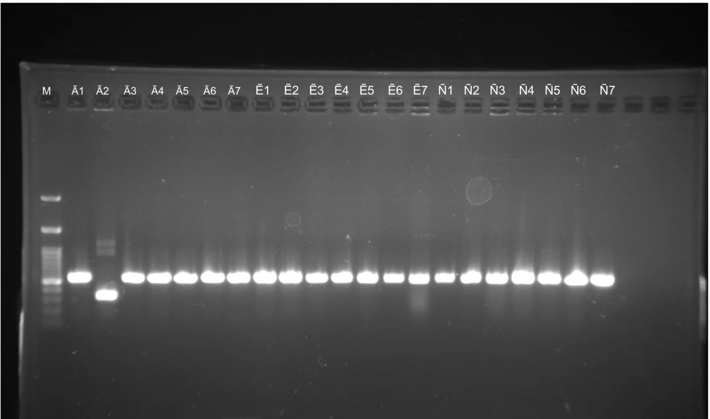
Bopep4_S15A_1-23_NHis,
Ê1 to Ê7 are Bopep4_G17A_1-23_NHis, and
Ñ1 to Ñ7 are Bopep4_WT_1-23_NHis. 3 kb ladder.
| Construct | Clones | Amplicon | Date | Status |
|---|---|---|---|---|
| Bopep4_WT_1-23_NHis | Ñ1 to Ñ7 | 548 bp | 18 Sep | Colony-PCR checked L0 |
| Bopep4_S15A_1-23_NHis | Ã1 to Ã7, Ã2 runs low | 548 bp | 18 Sep | Colony-PCR checked L0 |
| Bopep4_G17A_1-23_NHis | Ê1 to Ê7 | 548 bp | 18 Sep | Colony-PCR checked L0 |
Read what these are carefully, because it is easy to over-claim from them. They are residues 1 to 23 with an N-terminal histidine tag, in a Level 0 storage plasmid. A His tag on the front is a purification handle, so these were built to make protein in a tube, not to be secreted. They are not the SamyQ fusions, and the SamyQ-fused versions of S15A and G17A in the tables above stay Designed because no record shows the fusion being built. Nothing here is expression, purification or assay, and none of it changes the standing position that BoPep4 has never been on a plant.
Registry stubs
Eight registry entries have been opened for the protectant series and all eight are empty: SamyQ-LEA-v2t1, SamyQ-LEA-v2t2, SamyQ-ACCD-v2t1, SamyQ-ACCD-v3t1, Bopep4_WT_1-23_NHis, Bopep4_9-23_NHis, Bopep4_G17A_1-23_NHis and Bopep4_S15A_1-23_NHis. Each carries the same six blank headings: functional description, construct, sequence, sequence analysis, documentation and construct design. Four of the eight describe DNA nobody has made yet, and those four cannot honestly carry more than a design section.
Registry contributions
Being clear about what is ours is a condition of the collection being useful. Most of the regulatory parts came out of a kit, several of the coding sequences came from teams who submitted them years ago, and what we added is a set of fusions and variants that did not exist before this summer.
Reused parts
Eleven entries come straight from the SubtiToolKit [5], a Golden Gate kit written for B. subtilis and Gram-positive hosts, along with every destination vector we used: pSTK-0 for entry parts, pSTK-1A through pSTK-1D for transcription units, pSTK-2 for the joined circuit and pSTK-EXP-1 and pSTK-EXP-2 for the shuttle builds. The kit parts are Pveg, PlepA, PliaG, PtagC+RBS, RBS0, the EEBD blocking device, B0015, L3S2P21, and the Csn, AmyQ and GanA secretion tags.
Five coding and regulatory parts come from earlier iGEM teams: BBa_K1232004 for the Ho1:pcyA operon, BBa_K592002 for CcaR, BBa_K823000 and BBa_K823002 for PliaG and PlepA through BioBrick Box 2.0, and the Pveg accession in dispute under P1. The alternate promoter and RBS panel adds five more that were ordered and not used: BBa_K143013, BBa_K3317064, BBa_K2086002, BBa_K5178006 and BBa_K3317072.
Our own parts
What we would submit is the set with no accession in the tables above. In order of how much evidence sits behind each one:
- Sequence-confirmed at Level 1. ccaS-m3 as a standardised entry part, PcpcG2-veg, the EEBD-RBS0 composite, Csn:ACCD, Csn:LEA, SamyQ:ACCD v2t1 and SamyQ:LEA v2t1. Seven parts with a named colony and a date behind them.
- Sequence-confirmed at Level 0. SamyQ-BoPep4-v2t1 and SamyQ-BoPep4-v2t2, and, if P8 is settled in their favour, the three AmilCP reporter cassettes.
- Designed only. SamyQ:ACCD wild type, SamyQ-ACCD-v3t1, SamyQ-LEA wild type, SamyQ-LEA-v2t2, SamyQ-BoPep4 wild type, the 9-23 truncation, S15A and G17A. Eight designs that would have to be submitted as design entries and labelled as such.
What has no measurement
Registry documentation is judged partly on characterisation, so it is worth saying exactly which measurements this collection has and which it does not.
What we hold is cloning evidence: plasmid sizes, colony PCR amplicons, restriction digests and Sanger reads, all listed above with their dates. We also hold a transformation efficiency curve for B. subtilis 168 on the Engineering page, which is a measurement about the host and not about any part in this collection.
What we do not hold is any output measurement for any part. No part here has a fluorescence, absorbance or enzyme activity number attached to it. PcpcG2-veg has never been shown to change output in response to green light, in either direction, so the promoter at the centre of the design is uncharacterised and so is everything downstream of it. The three Western blots of 2, 7 and 24 August are the only protein-level data, and the 24 August blot, the only one whose ladder resolves, carries a single band at roughly 41 kDa in the lane loaded with the 18 August culture; the lane holding the culture that was actually sprayed on plants is blank. That band cannot be tied to a named part in this collection.
Every registry entry we submit should therefore describe its characterisation as absent and say what measurement would close the gap. For PcpcG2-veg the missing measurement is a green-light induction curve against a dark control in strain 168.
10.1111/1462-2920.15086, with no authors recorded on our side. The RiboJ and EEBD parts have no citation at all in our records. Both go into the shared Zotero library, GEMS-Taiwan 2026 → Wetlab, in APA 7, and come onto this page from there.
References
- Castillo-Hair, S. M., Baerman, E. A., Fujita, M., Igoshin, O. A., & Tabor, J. J. (2019). Optogenetic control of Bacillus subtilis gene expression. Nature Communications, 10(1), 3099. https://doi.org/10.1038/s41467-019-10906-6
- Haller, D. J., Castillo-Hair, S. M., & Tabor, J. J. (2025). Optogenetic control of B. subtilis gene expression using the CcaSR system. Methods in Molecular Biology, 2840, 1–17. https://doi.org/10.1007/978-1-0716-4047-0_1
- Chen, Y.-J., Liu, P., Nielsen, A. A. K., Brophy, J. A. N., Clancy, K., Peterson, T., & Voigt, C. A. (2013). Characterization of 582 natural and synthetic terminators and quantification of their design constraints. Nature Methods, 10(7), 659–664. https://doi.org/10.1038/nmeth.2515
- Guiziou, S., Sauveplane, V., Chang, H.-J., Clerté, C., Declerck, N., Jules, M., & Bonnet, J. (2016). A part toolbox to tune genetic expression in Bacillus subtilis. Nucleic Acids Research, 44(15), 7495–7508. https://doi.org/10.1093/nar/gkw624
- Caro-Astorga, J., Rogan, M., Malcı, K., Ming, H., Debenedictis, E., James, P., & Ellis, T. (2025). SubtiToolKit: A bioengineering kit for Bacillus subtilis and Gram-positive bacteria. Trends in Biotechnology, 43(6), 1446–1469. https://doi.org/10.1016/j.tibtech.2025.02.004